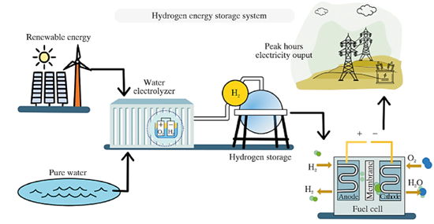
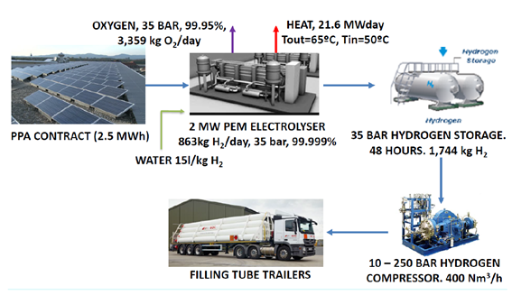
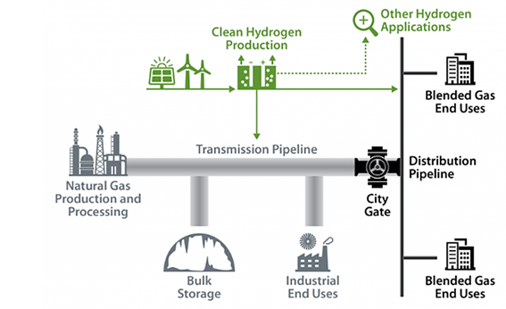
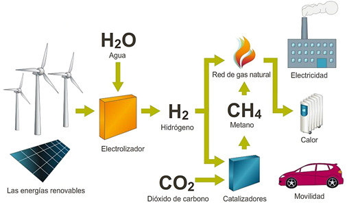
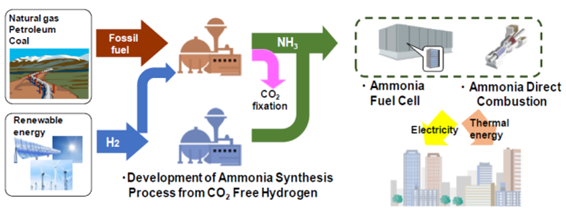
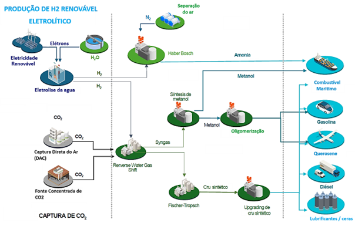

CAPÍTULO 5 SISTEMA DE ARMAZENAMENTO DE ENERGIA DE HIDROGÊNIO – H₂ COMO VECTOR ENERGÉTICO
Como alternativa às fontes de energia tradicionais baseadas em combustíveis fósseis, o uso do hidrogênio está sendo considerado no cenário energético mundial. Suas propriedades são mostradas na Tabela 5.1.
a seguir.
| Parâmetro | Valor |
|---|---|
| Massa especifica (gás) | 0,0899 kg/Nm³ |
| Massa especifica (líquido) | 0,0708 kg/L |
| Densidade energética do H₂ (gás) | 10,8 MJ/Nm³ |
| Densidade energética do H₂ (líquido) | 8,495 MJ/L |
| Ponto de ebulição | 20,28 K |
| Ponto de fusão | 14,02 K |
| PCI | 119,972 MJ/kg |
| PCS | 141,890 MJ/kg |
| Limite de inflamabilidade | 4 – 75 (%, Concentração em ar) |
| Temperatura de combustão espontânea | 858 K |
| CP | 14,33 J/kg.K |
| CV | 10,12 J/kg.K |
| Coeficiente de difusão | 0,61 cm2/s |
O hidrogênio não é uma fonte primária de energia, como o carvão ou o gás natural; é um transportador de energia que atualmente pode ser produzido usando sistemas energéticos tradicionais. A longo prazo, para que o hidrogênio seja visto como um combustível limpo e passível de produção em larga escala, é necessário buscar fontes de energia renováveis capazes de produzir esse elemento.
Por outro lado, para produzir hidrogênio em larga escala no futuro, todos os especialistas concordam que será necessário utilizar energia solar (ou energia nuclear nos países que a consideram). Acredita-se também que, a curto e médio prazo, o melhor método para promover a penetração do hidrogênio renovável será a produção a partir de energia eólica ou solar fotovoltaica, ou por meio da reforma de biocombustíveis, principalmente devido ao potencial apresentado por um método de produção que pode ser implementado de forma descentralizada.
O hidrogênio é considerado um transportador de energia ideal, pois é limpo e um transportador de energia química livre de carbono ou com emissão zero [38, 39]. Ele pode ser produzido a partir da água por eletrólise ou diretamente da luz solar usando separação fotocatalítica da água.
Um sistema típico de energia de hidrogênio compreende três componentes principais, conforme mostrado na Figura 5.1. Estes são (i) uma unidade de geração de hidrogênio, como um eletrolisador para converter a entrada de energia elétrica em hidrogênio, (ii) um sistema de armazenamento de hidrogênio e (iii) uma unidade de conversão de energia de hidrogênio, como uma célula de combustível (FC) ou FC regenerativa, para converter a energia química armazenada no hidrogênio de volta em energia elétrica. O excedente de fontes de energia renováveis pode ser aproveitado utilizando o hidrogênio como transportador de energia das seguintes maneiras:
- Quando há excesso de energia durante o processo de carregamento, o hidrogênio é produzido a partir da água por eletrólise e armazenado em um tanque de armazenamento. Durante os horários de pico, quando a disponibilidade de energia é limitada (durante o ciclo de descarga), a eletricidade é gerada a partir do hidrogênio armazenado usando células de combustível. Essa opção torna os parques de energia renovável administráveis, aumentando sua competitividade. A eficiência do ciclo completo fica entre 40% e 50%, mas é preciso levar em conta que, de outra forma, essa energia seria perdida [25]. A revisão dos desenvolvimentos em materiais para armazenamento de energia de hidrogênio e técnicas para armazenar com segurança combustível de hidrogênio por um período de tempo mais longo é apresentada em alguns estudos como [40] [41]. Thiyagarajan et al. [42] revisaram os mecanismos envolvidos em sistemas de armazenamento subterrâneo de hidrogênio, juntamente com técnicas de monitoramento e otimização de técnicas de injeção-retirada. Vários desafios, como crescimento microbiano, integridade do poço e reações geoquímicas encontradas durante o armazenamento no subsolo, também são brevemente discutidos.

Figura 5.1: Diagrama esquemático de um sistema de armazenamento de energia de hidrogênio. [35]
- Transformação do excedente de energia renovável em hidrogênio, armazenamento e posterior distribuição do ponto de produção para estações de hidrogênio ou pontos de reabastecimento de hidrogênio, onde será consumido como combustível por veículos elétricos a célula de combustível ou veículos de combustão interna modificados para queimar hidrogênio (Figura 5.2). Nesse caso, o excedente de energia renovável é transformado em combustível, reduzindo assim a importação de combustível e as emissões de gases de efeito estufa, já que o vapor d’água é a única emissão produzida pela combustão térmica ou eletroquímica do hidrogênio.

Figura 5.2: Geração de hidrogênio por meio de energia renovável e uso no setor de mobilidade. [25]
- Transformação do excesso de energia renovável em hidrogênio e injeção na rede de gás natural. Isso interligaria as duas principais redes que qualquer país desenvolvido possui: a rede elétrica e a rede de gás natural. Esta opção é considerada armazenamento de energia, devido à grande capacidade existente nas redes de gás natural. Há estudos científicos [25] [43] que apontam que, um teor máximo de hidrogênio de 5% é seria permitido na rede de gás natural existente, de modo a não comprometer a durabilidade das tubulações devido à presença de hidrogênio, embora, no momento, seja uma opção mais viável do que uma rede de transporte de hidrogênio exclusiva em larga escala. Vide Figura 5.3.

Figura 5.3: Blending de H₂ na rede de GN. [43]
- Transformação do excesso de energia renovável em hidrogênio e sua mistura com o CO₂ residual de qualquer processo para gerar metano sintético (Figura 5.4). O metano é o principal componente do gás natural. Da mesma forma, o hidrogênio proveniente do excesso de energia renovável pode ser misturado ao biogás de usinas de biodigestão, aterros sanitários, estações de tratamento de água, etc., transformando um fluxo inicialmente com baixo teor de metano em um com teor de metano acima de 98%. [25] . O gás natural sintético gerado pode ser usado para gerar energia térmica ou elétrica ou como combustível para veículos movidos a gás natural [44].

Figura 5.4: Power to Gas. H₂ + CO₂ para gerar gás sintético e injetar na rede de GN. [45]
- Transformação do excesso de energia renovável em hidrogênio e sua mistura com nitrogênio para produzir amônia renovável. Vide Figura 5.5. Essa amônia renovável pode ser usada na fabricação de fertilizantes, explosivos, produtos químicos, etc., ou pode ser usada como transportadora de energia, pois é possível armazenar 0,134 kg de hidrogênio por metro cúbico de amônia em condições normais, o equivalente em energia ao transporte de 121 kg de hidrogênio molecular. A 10 bar de pressão, ela será líquida, estável e pode ser usada como armazenadora de energia e até mesmo para importar energia. Se usada como transportadora de energia, o hidrogênio deve ser separado da amônia antes do uso, por meio de processos catalíticos ou eletroquímicos. [25]

Figura 5.5: Transformação do excesso de energia renovável em amônia. [25]
- Transformação do excesso de energia renovável em hidrogênio e mistura com CO2 para gerar etanol e/ou metanol renováveis sintéticos. Este etanol e/ou metanol renováveis podem ser utilizados nas indústrias química e auxiliar, ou podem ser utilizados como carreador de energia, pois podem conter o equivalente energético de 95 kg de hidrogênio por metro cúbico de etanol e/ou metanol. Se utilizado como carregador de energia, o hidrogênio deve ser separado do etanol e do metanol por meio de processos catalíticos ou eletroquímicos antes do uso [25].
Em resumo, a produção de H₂ de baixo conteúdo de carbono, a partir de excesso de energia renovável, irá permitir hoje em dia a produção de combustíveis sintéticos também chamados e-fuels. Desta forma pode-se perceber como o H₂ é na atualidade o novo vetor energético cujo desenvolvimento permitirá atingir uma drástica redução nos gases contaminantes e nos gases efeito estufa nas sociedades modernas.

Figura 5.6: Produção de e-fuels a partir da produção de H₂ renovável. [44]